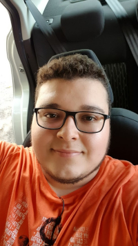

Ricardo Rodrigues de SouzaConclusão do Ensino Médio no Colégio Adventista de Vitória em 2016
Certificado de Proficiência em Inglês pela Cambridge University, emitido em 2015
Ensino Superior em andamento. 4º período de Sistemas de Informação pela FAESA
Auxiliar em Laboratório de Topografia - 6 meses no UNASP-EC em 2018
Estagiário na Motora.ai desde Abril de 2021